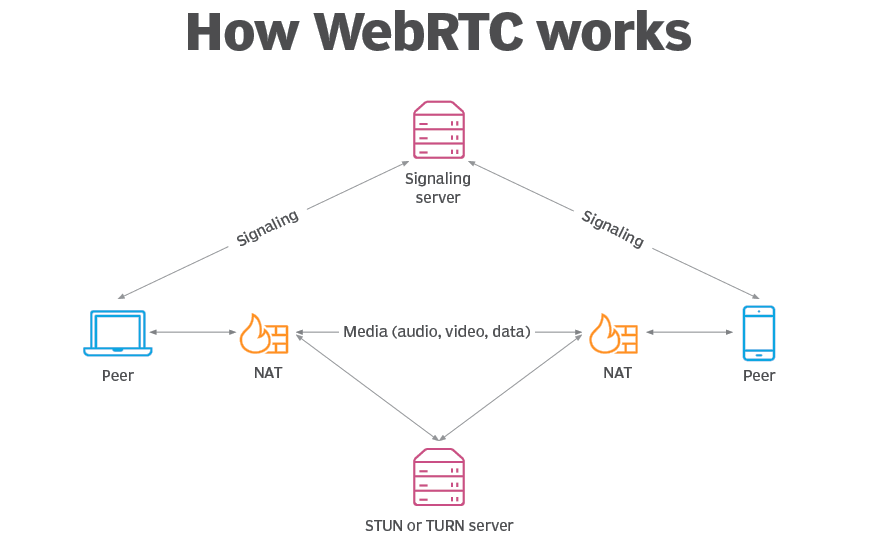

"WebRTC is the cornerstone of real-time communication on the web — enabling voice, video, and data sharing without plugins, directly in your browser."

Introduction to WebRTC
With WebRTC (Web Real-Time Communication), you can add real-time communication capabilities to your application that works on top of an open standard. It supports video, voice, and generic data to be sent between peers, allowing developers to build powerful voice- and video-communication solutions.
The technology is available on all modern browsers as well as on native clients for all major platforms. The technologies behind WebRTC are implemented as an open web standard and available as regular JavaScript APIs in all major browsers.
Use Cases and Applications
There are many different use-cases for WebRTC development, from basic web apps that use the camera or microphone, to more advanced video-calling applications and screen sharing. A WebRTC application will usually go through a common application flow: accessing the media devices, opening peer connections, discovering peers, and start streaming.
Technical Considerations
First, WebRTC uses UDP, and UDP is not a reliable protocol for transferring important data. UDP is good at sending data really fast but it doesn't check whether or not the data is being received. So UDP is great for video because the data gets there fast and if we lose a few frames it's not a big deal; but if this were a file we needed to send over and we lose a few bytes of data the entire file can be corrupted.
WebRTC also has no built-in signaling so it can't be used on its own to establish a peer-to-peer connection. WebRTC takes care of everything for us once the connection is established but leaves it up to us on how to transmit the initial data in order to connect two peers.
Getting Started with WebRTC
If you're interested in implementing WebRTC in your web applications, I recommend starting with the official WebRTC documentation and exploring code samples. As a full stack developer, I can help you integrate WebRTC features into your projects.
Need Help with WebRTC Implementation?
Looking to add real-time communication features to your web application? I specialize in custom web development and can help you implement WebRTC solutions.
Get in Touch